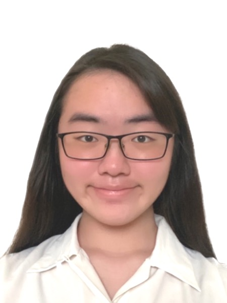

Christine Loo

Summary
I am a Year 2 Pharmaceutical Science major at the National University of Singapore. I am looking to take a second major in data analytics and a minor in philosophy and German. I am a polygot, interested in the Arts, Medicine and Philosophy.
Education
- Bachelor of Science, Pharmaceutical Science - National University of Singapore (2022-2026)
Work Experience
-
Clinic Assistant - Bless Medical Centre
Jan 2022 - Feb 2022
- Assisted with clinic calls and Chinese-English translations between doctor and migrant worker patients
- Handled registration and medicine dispensing of 50 migrant worker patients a day, while liaising with Ministry of Health through health declarations and submission of swabs to laboratory facilities
- Headed swab facility through aiding doctor with preparation of swabs and measurement of blood-pressure
-
Tutor - Happy Tutors Learning Centre
Jan 2022 - June 2022
- Conducted Mathematics, English and Chinese lessons for ten students ranging from kindergarten to Primary 6
- Students progress increased by at least 30% in class-work
Skills
- Coding: ⭐️⭐️⭐️⭐️
- Clinical: ⭐️⭐️⭐️⭐️
- Customer service: ⭐️⭐️⭐️⭐️
Awards and Certifications
- Certificate of Participation - NUS FoodTech Challenge (2023)
- Apollo 11 - NUS Orbital (2023)
- The Fundamentals of Digital Marketing - Google Digital Garage (2023)
- River Valley Academic Excellence Award 2021 - River Valley High School (December 2021)
- Represented school in NTU LKCMedicine Anatomy Challenge
Other
- My Hobbies include watching Oxford Union debates and reading up on Philosophical discussions
- Contact Me at christine.loo@u.nus.edu